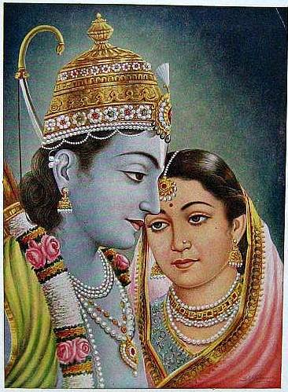
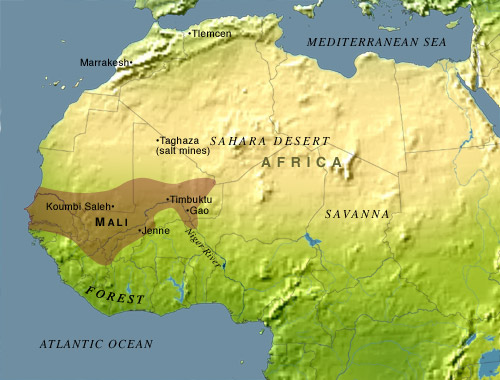
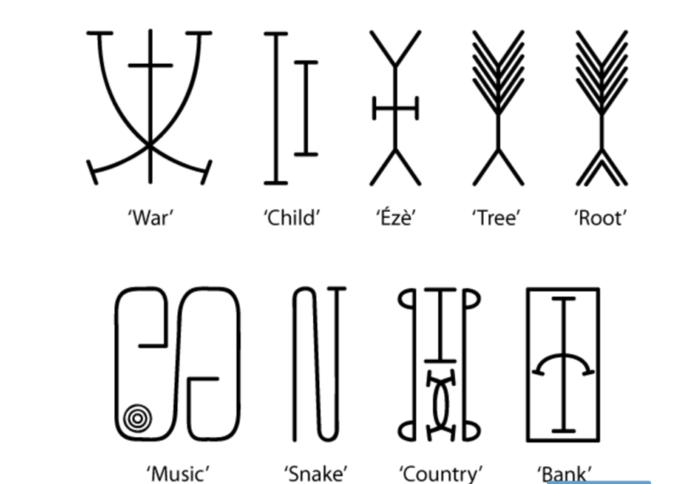
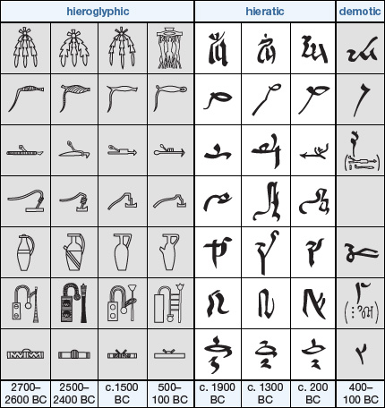
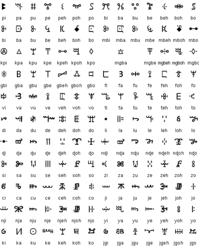

Introduction to Ancient Asian Literature
Ancient history is usually defined as the time period up to 500 CE. That means that ancient literature would be literature that was written during this time period up to 500 CE. This lesson focuses on ancient literature written in Asia. Some of the most prominent countries in ancient Asia were China and India and so the literature of these two nations will be the focus of this lesson. Ancient literature is often closely related to religion and this is true of Ancient Asian literature as well. The ancient literature of India is primarily concerned with Hinduism while the ancient literature of China is mainly concerned with Daoism and Confucianism

Confucius
Ancient Literature of India
Vedas
Vedas are the oldest of Sanskrit literature and Hindu scripture. Sanskrit is the ancient language of India and Hinduism is a multi-god religion that originated in India. There are four parts to the Vedas: the Samhitas, the Brahmanas, the Aranyakas, and the Upanishads. The Samhitas are hymns that praise the gods, the Brahmanas are prayers for priests, the Aranyakas are about worshiping and meditating, and the Upanishads are the philosophies of Hinduism.
Ramayana
Although we do not know exactly when Ramayana was written, it was probably not written before 300 BCE. It's an Indian epic poem written by the poet Valmiki in Sanskrit. Ramayana is divided into seven books and tells the story of Rama, a god. Ramayana is ultimately a love story between Rama and Sita, a princess. The antagonist or villain of the story is Ravana who at one point kidnaps Sita. But in the end, Rama saves Sita and they have two sons together.

Rama and Sita
Ancient Literature of China
The Art of War
The Art of War was written by Chinese general Sunzi (better known by the name Sun Tzu) in the fifth century BCE. It's a text about warfare and military strategy. There are thirteen chapters in The Art of War and these chapters contain aphorisms, or concise wisdom, about battle. One of his most famous aphorisms is 'the supreme art of war is to subdue the enemy without fighting.' This text has influenced military and business strategy.

Art of War
Confucius Analects
Confucius was a Chinese teacher and philosopher in the fifth century BCE. The Confucius Analects are teachings of Confucius to his disciples. Some of the most important teachings of the Confucius Analects are those regarding social interaction and hierarchy and respect in families and in government. Devotion to ancestors, parents, older siblings, and government officials was essential according to the Confucius Analects. It's actually a philosophy that still governs many aspects of Chinese culture.

Confucius Analects
African Literature: What is it?
African literature has been much written about. There is still debate about what it really is, its themes and its style and content. A notable aspect is that it includes both the oral and written literatures. The etymologic definition of literature is “writing formed with letters,” from the Latin littera (letters). Therefore, Pio Zirimu, a Ugandan scholar, suggested the word orature to replace the self-contradictory “oral literature.” Despite the ingenuity of the name, it didn’t really take hold, and “oral literature” is still the more popular term among scholars.
Included in oral African literature is the African heroic epic. A prime example is the Sunjata (or Sundjata/Sundiata) Epic of the Mendeka peoples, relating the legend of Sunjata, the 13th century king of the Mali Empire.

Empire of Mali
What is the stereotype about written African literature?
The oral form of African literature is frequently mentioned and acknowledged in papers and books, but even supposedly knowledgeable scholars hold the view that written African literature barely made any appearance before the 1950s (as a result of colonization). In other words, before Chinua Achebe’s famous Things Fall Apart and other African writers’ works of that era, there was no good African literature to be found. TFA was one of the first African novels to garner international critical acclaim, but was that all there was?
No, says Princeton professor of medieval, early modern, and modern African literature, Wendy Laura Belcher. She notes in her paper on African Literature, An Anthology of Written Texts from 3000 BCE to 1900 CE that while historians labor to overturn privailing misconceptions that Africa is a place without history, literary critics have done little to overturn a mistaken view that Africa has no literature. Some Westerners believe that writing on the continent was not done by Africans or in African languages. Belcher emphasizes, and others back her up, that in fact there is an at least 3000-year history of African writing.
Why has some African literature escaped notice (or been ignored)?
Much of African literature over the last millenia has disappeared from view because it has not survived, particularly in sub-Saharan Africa, but extant texts refer to these ancient documents as having existed. Second, many works were not published and therefore went unknown. Third, very few were translated from African languages into European languages, and they were therefore ignored.
As much as scholars probe and dissect shining examples of twentieth century African literature, Belcher points out there are historical precedents to the works of the prominent modern-day African writers. For example, it could be argued that the pidgin English works of Amos Tutuola (The Palm-Wine Drinkard), (which Dylan Thomas called “fresh, young English”), Ken Saro-Wiwa (Sozaboy), and Uzodinma Iweala (Beasts of No Nation) were well preceded by Antera Duke‘s eighteenth century diary, which was written in Nigerian pidgin English and carried to Scotland by a Scottish missionary. Where is that ever mentioned in popular analysis?
Historical categories of African literature
One subsection of African literature emerged from the writings of Africans living outside of Africa– both slaves and African youths whom European colonists sent to study in England, France, Portugal, Italy, Holland and Germany. The Interesting Narrative of the Life and Adventures of Olaudah Equiano or Gustavus Vassa, the African (1789), was written by former slave Olaudah Equiano, who described the awfulness of slavery and the slave trade.

An early edition of Olaudah Equiano’s autobiographical narrative
Equiano was in the forefront of the movement in Britain to abolish slavery. His book was highly influential in bringing the trade to an end. Written in English, Equiano’s narrative received much attention, but another group of Africans in Europe had writings in Latin. Those have not commanded as much close examination.
What are the ancient forms of African literature?
The Arab expansion in the Sahel spread Islam to the region, and the 11th-century Berber-led Almoravid invasion of the Empire of Ghana (not to be confused with modern Ghana) brought with it a Kufic-derived Arabic script.

Kufic
Mali, Sudan, and Nigeria developed different styles of Kufic-derived calligraphy. The role of Arabic writing and literature in West Africa has been long underestimated. Ajami is an African-adapted Arabic script found in the Swahili, Hausa, Wolof, and Yoruba. It is 300 t0 500 years old.
Another ancient written form in Nsibidi, which is an ideographic script with a system of symbols that was indigenous to what is now southeastern Nigeria. It dates back to at least 2000 BC.

Nsibidi
Many people don’t realize that the much-commercialized Adinkra symbols of Ghana also represent old, ideographic writing. It dates back to at least 1817, when the Englishman Thomas Edward Bowdich collected a piece of Adinkra cloth in 1817. The next oldest piece of Adinkra textile was sent in 1825 from the Elmina Castle to the royal cabinet of curiosities in The Hague.

Adinkra
Adinkra symbols recorded by Robert Sutherland Rattray, 1927. R. S. Rattray, Religion and Art in Ashanti (Oxford, 1927), 265.
1. Gyawu Atiko, lit. the back of Gyawu’s head. Gyawu was a sub-chief of Bantama who at the annual Odwira ceremony is said to have had his hair shaved in this fashion.
2. Akoma ntoaso, lit. the joined hearts.
3. Epa, handcuffs. See also No. 16.
4. Nkyimkyim, the twisted pattern.
5. Nsirewa, cowries.
6.Nsa, from a design of this name found on nsa cloths.
7. Mpuannum, lit. five tufts (of hair).
8. Duafe. the wooden comb.
9. Nkuruma kese, lit. dried okros.
<10. Aya, the fern; the word also means ‘ I am not afraid of you ‘, ‘ I am independent of you’ and the wearer may imply this by wearing it.
11. Aban, a two-storied house, a castle; this design was formerly worn by the King of Ashanti alone.
12. Nkotimsefuopua, certain attendants on the Queen Mother who dressed their hair in this fashion. It is really a variation of the swastika.
13 and 14 Both called Sankofa, lit. turn back and fetch it.
15. Kuntinkantan, lit. bent and spread out ; nkuntinkantan is used in the sense of ‘ do not boast, do not be arrogant ‘.
16. Epa, handcuffs, same as No. 3.
The Egyptians invented three different types of scripts–hieroglyphic, hieratic and demotic; and yes, like it or not, Egyptians are Africans.

Hieroglyphic, demotic and hieratic scripts of Egypt
Vai script, invented in the 19th century, is a particularly lovely form of writing indigenous to Liberia and a small portion of Sierra Leone. It is a set of symbols representing syllables

Vai syllabary
Summary
Clearly, there is much more to learn about African literature. In reference to Ajami, Serigne Kane notes, “the writings of black African authors have long been neglected due to prejudice, as both Europeans and Arab scholars with the necessary linguistic competence to study their works have often deemed their insights of little or no scholarly interest or benefit, and most assume that sources of knowledge on Africa are either oral or written in European languages,” (quote from Fallou Ngom.) Much the same applies to other forms of African writings.
Even the word “literature” seems to have been captured and held hostage by Eurocentric exceptionalism as its rightful and exclusive property. African literature has been viewed as that which developed as a result of the “civilizing influences” of invading Europeans. It’s time to take the blinders off and open up the mind.